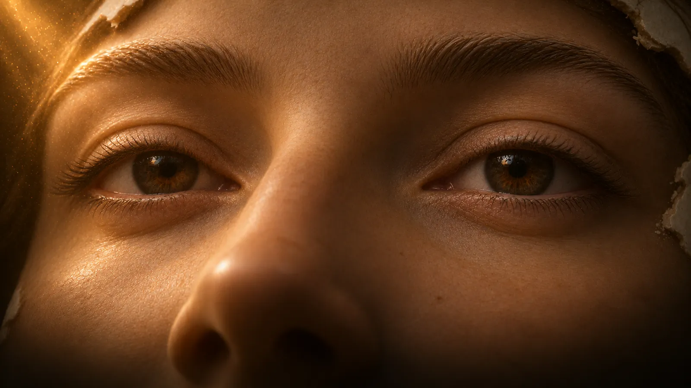

Szene 9 von 9
ΩFazit
„Omnia mutantur, nihil interit.“
„Alles wandelt sich, nichts vergeht.“
Zum Schluss: einmal durch alle Zeiten.
Fast dreitausend Jahre, zwölf Stationen. Noch ist diese Seite aus Stein – grau, ohne Gold. Scrolle weiter, bis sie dich ansieht.
Zeitstrahl
Fast dreitausend Jahre in zwölf Bildern
- um 700 v. Chr.Ungeheuer
Hesiod erzählt Medusa als Gorgone von Geburt an – ohne Schuld, ohne Strafe.1 Β Mythos
- um 590/580 v. Chr.Schutzzeichen
Auf dem Giebel des Artemis-Tempels von Korfu bewacht die Fratze den Eingang.2 Δ Schutzzeichen
- 5. Jh. v. Chr.Schönheit
Bis zur Klassik bekommt das Gesicht menschliche, schöne Züge.3 Δ Schutzzeichen
- um 8 n. Chr.Opfer
Ovid erzählt von der schönen Frau, die im Tempel vergewaltigt und dafür bestraft wird.4 Β Mythos
- 1./2. Jh. n. Chr.Rivalin
Bei Apollodor will Medusa sich mit Athena an Schönheit messen.5 Β Mythos
- 532Baustein
In der Cisterna Basilica in Istanbul tragen zwei Medusenköpfe Säulen – einer kopfüber.6 Θ Heute
- 14. Jh.Verzweiflung
Bei Dante hält Vergil dem Dichter die Augen zu, als die Furien Medusa rufen.7 Ζ Literatur
- 1554Trophäe
Cellinis Perseus hält ihren Kopf über die Piazza in Florenz.8 Η Kunst
- 1597/98Sinnbild
Caravaggios Schild für die Medici – Medusa als Zeichen der Weisheit.9 Η Kunst
- 1922Angst
Freud notiert „Das Medusenhaupt“ – ein Bild männlicher Angst.10 Ε Deutungen
- 1975Lachen
Hélène Cixous dreht sie um: „Das Lachen der Medusa“.11 Ε Deutungen
- 2020Siegerin
Garbatis Medusa steht mit dem Kopf des Perseus gegenüber einem New Yorker Gericht.12 Η Kunst

Wer sie ansah, wurde zu Stein.
Jetzt sieht sie uns an.
Abb. 48Medusa erwacht aus dem Stein (Video, scroll-gesteuert) · KI-generiert
Antwort auf die Leitfrage
Vom Ungeheuer zur Ikone
Wie wurde aus einem Schutzzeichen und Monster eine Opferfigur und feministische Ikone – und was sagt das über die jeweilige Zeit?
Am Anfang war Medusa kein Mensch, sondern ein Werkzeug. Die Griechen hängten ihre Fratze an Giebel, Schilde und Dächer, weil sie Schutz durch Schrecken suchten. Hesiod erzählt sie ohne Schuld und ohne Strafe – ein Ungeheuer, das es eben gibt.
Mit Ovid bekommt sie eine Geschichte: Sie wird eine Frau, der Gewalt angetan und die dafür bestraft wird. Die Kunst der folgenden Jahrhunderte macht aus ihr trotzdem zuerst eine Trophäe – Cellinis Perseus hält ihren Kopf hoch, die Medici sehen in ihr ein Sinnbild ihrer Klugheit. Im 19. und 20. Jahrhundert verschiebt sich der Blick: Man hat Mitleid mit ihr, Freud macht sie zum Bild männlicher Angst.
Seit Hélène Cixous erzählt Medusa sich selbst. Garbatis Statue, die Tattoos von Überlebenden, die Neuerzählungen von Haynes und Burton geben ihr die Stimme zurück, die ihr der Mythos genommen hatte. Was das über die Zeiten sagt? Jede Epoche zeigt in Medusa, wovor sie Angst hat – und wem sie das Recht gibt, hinzusehen. Das Bild wandelt sich. Das Gesicht vergeht nicht.
Meine Sicht
Es gibt nicht die Medusa. Es gibt nur die, die wir aus ihr machen.
Im Unterricht stand von Anfang an fest: Medusa wurde vergewaltigt und dafür bestraft. Aber wer sagt das eigentlich? Ein einziger Dichter – der Römer Ovid, rund 700 Jahre nach Hesiod. Bei Hesiod ist Medusa von Geburt an eine Gorgone, ohne Schuld und ohne Strafe. Bei Apollodor fordert sie Athene an Schönheit heraus. Und moderne Deutungen sehen in der Verwandlung sogar einen Schutz: Kein Mann kann sie mehr ansehen.
Ich glaube deshalb nicht daran, dass Medusa „bestraft“ wurde, und ich halte nichts davon, sie auf das Schema Täter und Opfer festzulegen. Eine einzelne Fassung ist keine Wahrheit, sondern nur eine von vielen. Medusa war Monster, Schutzzeichen, Rivalin und Ikone – je nachdem, wer erzählt.
Allein die Tatsache, dass sich Menschen heute Medusa als Zeichen des Überlebens tätowieren lassen, zeigt, dass ein Mythos kein abgeschlossenes Kapitel ist. Er wird weitergeschrieben – auch von uns.
Eine digitale Ausstellung
MEDUSA
Monster · Opfer · Schutzzeichen · Ikone
Ausstellung von
Glossar
- Aigis
- Schild bzw. Umhang der Athena, auf dem das Gorgonenhaupt sitzt.
- apotropäisch
- Unheil abwehrend – ein Bild, das durch Schrecken schützt.
- Écriture féminine
- „Weibliches Schreiben“: Hélène Cixous’ Aufruf an Frauen, ihre eigene Sprache zu finden.
- Gorgoneion
- Das Bild des Gorgonenhaupts als Schutzzeichen auf Schilden, Dächern, Münzen und Tempeln.
- Graien
- Drei alte Schwestern der Gorgonen, die sich ein Auge und einen Zahn teilen.
- Harpe
- Die Sichel aus Adamant, mit der Perseus Medusa enthauptet.
- Kibisis
- Die Tasche, in der Perseus das Haupt der Medusa trägt.
- Metamorphose
- Verwandlung – und Titel von Ovids großem Werk.
- Okeanos
- Der Weltstrom am Rand der Erde, jenseits dessen die Gorgonen wohnen.
- Täter-Opfer-Umkehr
- Wenn nicht der Täter, sondern das Opfer einer Tat beschuldigt oder bestraft wird.
Bildnachweis
Startseite: Bilder und Scroll-Film KI-generiert. Alle als „KI-generiert“ markierten Abbildungen sind mit KI erzeugt. Echte Kunstwerke stammen überwiegend von Wikimedia Commons; geschützte Fotos sind mit Fundort und Rechteinhaber genannt.
- Abb. 1Α Herkunft Gorgonen – Foto/Urheber: ArchaiOptix, Wikimedia Commons, CC BY-SA 4.0 · Quelle
- Abb. 2Α Herkunft Die Graien – KI-generiert
- Abb. 3Β Mythos Gorgo, attische Vasenmalerei, Anagyros-Maler, Athen, Nationalmuseum – Foto/Urheber: ArchaiOptix, Wikimedia Commons, CC BY-SA 4.0 · Quelle
- Abb. 4Β Mythos Caravaggio, Medusa, 1597/98, Uffizien, Florenz – Foto/Urheber: Caravaggio, Wikimedia Commons, CC0 · Quelle
- Abb. 5Β Mythos Die Rivalin: Medusa und Athena Stirn an Stirn – KI-generiert
- Abb. 6Γ Perseus Burne-Jones, Danaë und der eherne Turm, 1872 – Foto/Urheber: Edward Burne-Jones, Wikimedia Commons, gemeinfrei · Quelle
- Abb. 7Γ Perseus Burne-Jones, Der Ruf des Perseus, 1877 – Foto/Urheber: Edward Burne-Jones, Wikimedia Commons, gemeinfrei · Quelle
- Abb. 8Γ Perseus Burne-Jones, Perseus und die Graien, 1877–1880 – Foto/Urheber: Edward Burne-Jones, Wikimedia Commons, gemeinfrei · Quelle
- Abb. 9Γ Perseus Burne-Jones, Perseus und die Meeresnymphen, 1877 – Foto/Urheber: Edward Burne-Jones, Wikimedia Commons, gemeinfrei · Quelle
- Abb. 10Γ Perseus Burne-Jones, Das Auffinden der Medusa, 1882 – Foto/Urheber: Edward Burne-Jones, Wikimedia Commons, gemeinfrei · Quelle
- Abb. 11Γ Perseus Burne-Jones, Der Tod der Medusa I, 1882 – Foto/Urheber: Edward Burne-Jones, Wikimedia Commons, gemeinfrei · Quelle
- Abb. 12Γ Perseus Burne-Jones, Der Fels des Verhängnisses, 1885–88 – Foto/Urheber: Edward Burne-Jones, Wikimedia Commons, gemeinfrei · Quelle
- Abb. 13Γ Perseus Burne-Jones, Das erfüllte Verhängnis, 1885–88 – Foto/Urheber: Edward Burne-Jones, Wikimedia Commons, gemeinfrei · Quelle
- Abb. 14Γ Perseus Burne-Jones, Das unheilvolle Haupt, 1885–88 – Foto/Urheber: Edward Burne-Jones, Wikimedia Commons, gemeinfrei · Quelle
- Abb. 15Γ Perseus Medusa schläft zwischen ihren Schwestern – KI-generiert
- Abb. 16Δ Schutzzeichen Gorgo vom Westgiebel des Artemis-Tempels, Korfu, Archäologisches Museum – Foto/Urheber: Dr.K., Wikimedia Commons, CC BY-SA 4.0 · Quelle
- Abb. 17Δ Schutzzeichen Stirnziegel mit Medusenkopf, Tarent, Metropolitan Museum, New York – Wikimedia Commons, CC0 · Quelle
- Abb. 18Δ Schutzzeichen Medusa Rondanini, Marmor, Glyptothek München (Inv. 252) – Wikimedia Commons, gemeinfrei · Quelle
- Abb. 19Δ Schutzzeichen Gorgo-Giebel von Korfu – Foto/Urheber: Dr.K., Wikimedia Commons, CC BY-SA 4.0 · Quelle
- Abb. 20Ε Deutungen Das Tor mit dem Gorgonenhaupt – KI-generiert
- Abb. 21Ε Deutungen Die verwundete Statue – KI-generiert
- Abb. 22Ε Deutungen Der Held am Rand der Welt – KI-generiert
- Abb. 23Ε Deutungen Der Spiegel, der zurückschaut – KI-generiert
- Abb. 24Ε Deutungen Die Couch in Wien – KI-generiert
- Abb. 25Ε Deutungen Die lachende Medusa – KI-generiert
- Abb. 26Ε Deutungen Die Stele ohne Gesicht – KI-generiert
- Abb. 27Ζ Literatur Gustave Doré, Die Furien – Foto/Urheber: Gustave Doré, Wikimedia Commons, gemeinfrei · Quelle
- Abb. 28Η Kunst Gorgo-Giebel von Korfu – Foto/Urheber: Dr.K., Wikimedia Commons, CC BY-SA 4.0 · Quelle
- Abb. 29Η Kunst Benvenuto Cellini, Perseus – Foto/Urheber: Jebulon, Wikimedia Commons, CC0 · Quelle
- Abb. 30Η Kunst Caravaggio, Medusa – Foto/Urheber: Caravaggio, Wikimedia Commons, CC0 · Quelle
- Abb. 31Η Kunst Peter Paul Rubens und Frans Snyders, Haupt der Medusa – Foto/Urheber: Peter Paul Rubens / Attributed to Frans Snyders, Wikimedia Commons, gemeinfrei · Quelle
- Abb. 32Η Kunst Flämischer Maler, Haupt der Medusa – Foto/Urheber: anonymous, Wikimedia Commons, gemeinfrei · Quelle
- Abb. 33Η Kunst Gian Lorenzo Bernini, Büste der Medusa – Foto/Urheber: Jastrow, Wikimedia Commons, gemeinfrei · Quelle
- Abb. 34Η Kunst Antonio Canova, Perseus – Foto/Urheber: Antonio Canova, Wikimedia Commons, gemeinfrei · Quelle
- Abb. 35Η Kunst Arnold Böcklin, Medusa – Foto/Urheber: Arnold Böcklin, Wikimedia Commons, gemeinfrei · Quelle
- Abb. 36Η Kunst Edward Burne-Jones, Das unheilvolle Haupt – Foto/Urheber: Edward Burne-Jones, Wikimedia Commons, gemeinfrei · Quelle
- Abb. 37Η Kunst Gustav Klimt, Beethovenfries (Die feindlichen Gewalten) – Foto/Urheber: Gustav Klimt, Wikimedia Commons, gemeinfrei · Quelle
- Abb. 38Η Kunst Luciano Garbati, Medusa mit dem Haupt des Perseus – Foto/Urheber: Luciano Garbati, offizielle Website, TheCollector, urheberrechtlich geschützt · Quelle
- Abb. 39Η Kunst Benvenuto Cellini, Perseus, 1545–1554, Florenz – Foto/Urheber: Jebulon, Wikimedia Commons, CC0 · Quelle
- Abb. 40Η Kunst Luciano Garbati, Medusa mit dem Haupt des Perseus, 2008 – Foto/Urheber: Luciano Garbati, offizielle Website, TheCollector, urheberrechtlich geschützt · Quelle
- Abb. 41Η Kunst Théodore Géricault, Das Floß der Medusa – Foto/Urheber: Théodore Géricault, Wikimedia Commons, gemeinfrei · Quelle
- Abb. 42Θ Heute Flagge der Region Sizilien – Foto/Urheber: Angelo Romano, Wikimedia Commons, gemeinfrei · Quelle
- Abb. 43Θ Heute Medusa-Emblem von Versace – Foto/Urheber: Viceryion, Wikimedia Commons, CC BY-SA 4.0 · Quelle
- Abb. 44Θ Heute Medusa-Tattoo – Foto/Urheber: DomCarterTattoo, Wikimedia Commons, CC BY-SA 4.0 · Quelle
- Abb. 45Θ Heute Ray Harryhausens Medusa-Modell aus „Kampf der Titanen“ (1981), Valence House Museum – Foto/Urheber: Dr. Karl Shuker, ShukerNature (Blog), urheberrechtlich geschützt · Quelle
- Abb. 46Θ Heute Ohrenquallen im Monterey Bay Aquarium (Video, farblich angepasst) – Foto/Urheber: FASTILY, Wikimedia Commons, CC BY-SA 4.0 · Quelle
- Abb. 47Θ Heute Medusenkopf in der Cisterna Basilica, Istanbul – Foto/Urheber: Ank Kumar, Wikimedia Commons, CC BY-SA 4.0 · Quelle
- Abb. 48Ω Fazit Medusa erwacht aus dem Stein (Video, scroll-gesteuert) – KI-generiert


_-_The_Call_of_Perseus_-_SOTAG_,_100_-_Southampton_City_Art_Gallery.jpg){kind=link}

_-_Perseus_and_the_Sea_Nymphs_(The_Arming_of_Perseus)_-_SOTAG_,_102_-_Southampton_City_Art_Gallery.jpg){kind=link}
_-_The_Finding_of_Medusa_-_SOTAG_,_103_-_Southampton_City_Art_Gallery.jpg){kind=link}

_-_The_Rock_of_Doom_-_SOTAG_,_107_-_Southampton_City_Art_Gallery.jpg){kind=link}
_-_The_Doom_Fulfilled_-_SOTAG_,_106_-_Southampton_City_Art_Gallery.jpg){kind=link}
_-_The_Baleful_Head_-_SOTAG_,_108_-_Southampton_City_Art_Gallery.jpg){kind=link}

_MET_DP233548.jpg){kind=link}


.jpg){kind=link}


_06.jpg){kind=link}
Quellen
Antike und historische Texte
- Apollodor: Bibliotheke 2.4 (englische Übersetzung, Washington State University) · public.archive.wsu.edu/hughesc/public_html/apollodorus_perseus.html
- Apollodor: Bibliotheke, Buch II, Kap. 4 (Perseids-Ausgabe) · cts.perseids.org/read/greekLit/tlg0548/tlg001/perseus-eng2/2.4.1-2.4.12
- Dante Alighieri: Divina Commedia, Inferno, Canto IX (italienischer Text, Wikisource) · it.wikisource.org/wiki/Divina_Commedia/Inferno/Canto_IX
- Hesiod: Theogonie, V. 270 ff. · www.greek-gods.org/sources/medusa.php
- Johann Wolfgang von Goethe: Faust. Eine Tragödie, Walpurgisnacht (Projekt Gutenberg) · projekt-gutenberg.org/authors/johann-wolfgang-von-goethe/books/faust-eine-tragoedie/chapter/25
- Ovid: Metamorphosen, Buch IV–V, übersetzt von Johann Heinrich Voß (Projekt Gutenberg) · projekt-gutenberg.org/authors/ovid/books/metamorphosen/chapter/24
- Pausanias: Beschreibung Griechenlands 2.21.5–6 (Perseids-Ausgabe) · cts.perseids.org/read/greekLit/tlg0525/tlg001/perseus-eng2/2.20.9-2.21.6
- Percy Bysshe Shelley: On the Medusa of Leonardo da Vinci in the Florentine Gallery, 1819 (poets.org) · poets.org/poem/medusa-leonardo-da-vinci-florentine-gallery
Museen und Fachquellen
- Albertina: Gustav Klimt, Beethovenfries (Digitale Publikation) · digitalepublikationen.albertina.at/groups/beethovenfries/results
- CAMWS 2010: Lucan, Pharsalia IX (Abstract) · camws.org/meeting/2010/program/abstracts/12D4.Brinnehl.pdf
- Center for Hellenic Studies, Harvard: Homeric flowers and the monstrousness of death (zu J.-P. Vernant, „La mort dans les yeux“, 1985) · www-current.chs.harvard.edu/chapter/9-homeric-flowers-and-the-monstrousness-of-death
- Circa Theatre: Programmheft zu Medusa (PDF) · www.circa.co.nz/wp-content/uploads/2018/09/Final-Print-1.pdf
- CUNY Manifold: On the Medusa of Leonardo da Vinci in the Florentine Gallery · cuny.manifoldapp.org/read/on-the-medusa-of-leonardo-da-vinci-in-the-florentine-gallery
- Deutsche Digitale Bibliothek: Gorgo-Giebel, Korfu · www.deutsche-digitale-bibliothek.de/item/GVCO5E3I7EYUBJ5HCJ6DEXVFB5TTASAW
- Kunsthistorisches Museum Wien: Rubens und Snyders, Haupt der Medusa · khm.at/en/object/1626
- Lempertz: Tafel mit Gorgoneion-Motiv (Katalog) · lempertz.com/en/catalogues/lot/1244-2/879-an-italien-panel-with-a-gorgoneion-motif.html
- Metropolitan Museum of Art: Gorgoneion-Stirnziegel · 82nd-and-fifth.metmuseum.org/toah/works-of-art/20.215
- Musei Capitolini: Gian Lorenzo Bernini, Büste der Medusa · museicapitolini.org/en/node/82220
- Museum August Kestner: Medusa Rondanini (Kameo) · nds.museum-digital.de/pdf/object/85903.pdf?lang=de
- Nabugodi, Mathelinda: Medusan Figures (UCL Discovery, PDF) · discovery.ucl.ac.uk/id/eprint/10180035/1/Nabugodi%20Medusan%20Figures.pdf
- Olalquiaga, Celeste: Studie zur Gorgo und zum Gorgoneion (PDF) · www.celesteolalquiaga.com/_files/ugd/514c6b_e733e577dde84b0ba9e63203a40af741.pdf
- Orlando, Cambridge University Press: Hélène Cixous · orlando.cambridge.org/index.php/profiles/cixohe
- PLOS ONE (2021): Gorgoneion-Fragmente aus der Gorham’s Cave, Gibraltar · www.ncbi.nlm.nih.gov/pmc/articles/PMC8016213
- ProQuest: Freuds „Das Medusenhaupt“ (Notiz 1922, gedruckt 1940) · www.proquest.com/docview/219709411
- Regione Siciliana: I simboli della Regione – la bandiera · regione.sicilia.it/index%2Ephp/la-regione/i-simboli-della-regione/la-bandiera
- Sahlberg, Oskar: Medusa-Motive bei Goethe (Pränatale Psychologie, PDF) · mattes.de/buecher/praenatale_psychologie/PP_PDF/PP_13_1-2_Sahlberg.pdf
- Schollmeyer, P.: Die 50 bekanntesten archäologischen Stätten der griechischen Inseln (Leseprobe) · www.na-verlag.de/wp-content/uploads/book-content/9783961762477_leseprobe_01.pdf
- Toyama: Sartre, Laing und der Blick der Medusa (PDF, dLib) · dlib.si/stream/URN:NBN:SI:DOC-6FEB21UQ/6be9b71f-b9cb-47a9-9be5-f3e9739102a2/PDF
- Tru Vue: Burne-Jones’ Perseus-Zyklus · tru-vue.com/?p=6070
- Universität Heidelberg, Kunstchronik: Géricault, Das Floß der Medusa · journals.ub.uni-heidelberg.de/index.php/kb/article/view/80211/74169
- University of Washington: Gorgonen bei Homer (ResearchWorks, PDF) · digital.lib.washington.edu/researchworks/bitstreams/925aa792-fee2-4094-9cf0-560ea265951f/download
- Yale Open Courses: Dante in Translation, Inferno IX · oyc.yale.edu/node/1430
Artikel und Nachschlagewerke
- ADAC Maps: Archäologisches Museum Korfu · maps.adac.de/poi/archaeologisches-museum-korfu
- Adweek: Versace’s Medusa logo breaks every design rule – so why does it work? · www.adweek.com/brand-marketing/versaces-medusa-logo-breaks-every-design-rule-so-why-does-it-work
- ancient-greece.org: Gorgon-Giebel von Korfu · ancient-greece.org/?p=11758
- Antigone Journal: Mary and Minerva – symbolic protest (2021) · antigonejournal.com/2021/10/mary-minerva-symbolic-protest
- Art and Popular Culture: Medusa’s Head (Freud) · artandpopularculture.com/Medusa%27s_Head
- Artdaily: How a Medusa sculpture from a decade ago became #MeToo art · artdaily.com/news/129187/How-a-Medusa-sculpture-from-a-decade-ago-became--MeToo-art
- BeCulture: Caravaggios Medusa · www.beculture.it/en/wp-json/wp/v2/posts/19368
- Biblical Archaeology Society: Perseus and Medusa · library.biblicalarchaeology.org/sidebar/perseus-and-medusa
- Britannica Kids: Gorgon · kids.britannica.com/students/article/Gorgon/324903
- Cavacopedia: Medusa’s Head · cavac.at/cavacopedia/Medusa%27s%20Head
- DailyArt Magazine: #MeToo and the Medusa myth (u. a. Böcklin) · www.dailyartmagazine.com/metoo-and-the-medusa-myth
- Dante Book Club: Medusa and the mind – what Dante’s Furies mean · armenikus.substack.com/p/medusa-and-the-mind-what-dantes-furies
- Den of Geek: The top 10 Ray Harryhausen creatures · www.denofgeek.com/movies/the-top-10-ray-harryhausen-creatures
- Etymonline: medusa · www.etymonline.com/de/word/medusa
- Goodreads: Jessie Burton’s feminist Medusa · www.goodreads.com/author_blog_posts/24318420-jessie-burton-s-feminist-medusa-flips-the-script-on-an-ancient-greek-myt
- greek-gods.org: Medusa – Quellen · www.greek-gods.org/sources/medusa.php
- GTP: Archaeological Museum of Corfu · www.gtp.gr/TDirectoryDetails.asp?id=4318
- Inside Story: Mary Beard, „Women & Power“ (2017) · insidestory.org.au/?p=46369
- istanbul.com: Basilica Cistern Guide · istanbul.com/de/blog/landmark-guides/basilica-cistern-guide
- Know Your Meme: Medusa Tattoo · knowyourmeme.com/memes/medusa-tattoo
- LitCharts: The Lightning Thief, Chapter 11 · litcharts.com/lit/the-lightning-thief/chapter-11
- Medium: History of the logo Versace · medium.com/@darar.11des/history-of-the-logo-versace-b805f0ff629b
- Parade / Yahoo: Medusa tattoos are everywhere lately – here’s why · www.yahoo.com/lifestyle/medusa-tattoos-everywhere-lately-heres-110000504.html
- Philosophical Eggs: Sartre und der Blick · philosophicaleggs.com/?p=4572
- Planet Wissen: Quallen – Wissensfrage · www.planet-wissen.de/natur/tiere_im_wasser/quallen/pwiewissensfrage466.html
- Prospect Magazine: Why do we still depict Medusa as a monster? · prospectmagazine.co.uk/society/39609/why-do-we-still-depict-medusa-as-a-monster
- Quellensammlung „Gorgons“ (Paul August, Wikipedia-Entwurf) · wiki.riteme.site/wiki/User:Paul_August/Gorgons
- Reading the Past: A monster reenvisioned (2023) · readingthepast.blogspot.com/2023/02/a-monster-reenvisioned-natalie-haynes.html
- Roman Empire Times: Did Ovid change the Greek Medusa myth forever? · romanempiretimes.com/did-ovid-change-the-greek-medusa-myth-forever
- Simple English Wikipedia: Gorgoneion · simple.wikipedia.org/wiki/Gorgoneion
- Sixtysix Magazine: What does the Versace logo mean? · sixtysixmag.com/landing/what-does-the-versace-logo-mean
- Smithsonian Magazine: Controversial #MeToo Medusa statue unveiled · www.smithsonianmag.com/smart-news/controversial-metoo-medusa-statue-unveiled-180976048
- SparkNotes: The Lightning Thief, Section 5 · www.sparknotes.com/lit/lightning-thief/section5
- Stephens College: Art History Glossary – Gorgoneion · blog.stephens.edu/arh101glossary/?p=2272
- Sygic Travel: The Raft of the Medusa · travel.sygic.com/en/poi/the-raft-of-the-medusa-poi:4088597
- Tales of Times Forgotten: No, Athena didn’t turn Medusa into a monster to protect her (2022) · talesoftimesforgotten.com/2022/09/07/no-athena-didnt-turn-medusa-into-a-monster-to-protect-her
- The Art Newspaper: #MeToo Medusa sculpture to be installed across from New York courthouse (2020) · www.theartnewspaper.com/2020/10/13/metoo-medusa-sculpture-to-be-installed-across-from-new-york-courthouse-where-harvey-weinstein-stood-trial
- The Collector: How did Luciano Garbati reimagine Medusa? · www.thecollector.com/how-luciano-garbati-reimagine-medusa
- The Collector: Why did Caravaggio paint Medusa? · www.thecollector.com/why-did-caravaggio-paint-medusa
- The Daily Beast: Medusa is back, standing tall and complicated in the #MeToo era · www.thedailybeast.com/medusa-is-back-standing-tall-and-complicated-in-the-metoo-era
- The Eclectic Light Company: Ovid’s Metamorphoses on canvas 21 – Perseus and Medusa · eclecticlight.co/2017/05/24/changing-stories-ovids-metamorphoses-on-canvas-21-perseus-and-medusa
- The Medieval Bestiary: Lucan, Pharsalia · bestiary.ca/prisources/psdetail964.htm
- theoi.com: Gorgones · www.theoi.com/Pontios/Gorgones.html
- Visit Tuscany: Die Medusa von Caravaggio · www.visittuscany.com/de/attraktionen/die-medusa-von-caravaggio
- Wikipedia (IPFS-Spiegel): Cultural depictions of Medusa and Gorgons · ipfs.ssi.eecc.de/ipns/en.wikipedia-on-ipfs.org/wiki/Cultural_depictions_of_Medusa_and_Gorgons
- Wikipedia: Clash of the Titans (1981 film) · en.wikipedia.org/wiki/Clash_of_the_Titans_(1981_film)
- Wikipedia: Flag of Sicily · en.wikipedia.org/wiki/Flag_of_Sicily
- Wikipedia: Gorgon · en.wikipedia.org/wiki/Gorgon
- Wikipedia: Gorgons · en.wikipedia.org/wiki/Gorgons
- Wikipedia: Medusa (Caravaggio) · en.wikipedia.org/wiki/Medusa_(Caravaggio)
- Wikipedia: Medusa (Rubens) · en.wikipedia.org/wiki/Medusa_(Rubens)
- Wikipedia: Medusa complex (Gaston Bachelard) · en.wikipedia.org/wiki/Medusa_complex
- Wikipedia: Medusa Rondanini · en.wikipedia.org/wiki/Medusa_Rondanini
- Wikipedia: Myrina (Amazon) – nach Diodor · en.wikipedia.org/wiki/Myrina_(Amazon)
- Wikipedia: Stone Blind (Natalie Haynes) · en.wikipedia.org/wiki/Stone_Blind
- Wikipedia: The Laugh of the Medusa · en.wikipedia.org/wiki/The_Laugh_of_the_Medusa
- Wikipedia: Winged Gorgoneion · en.wikipedia.org/wiki/Winged_Gorgoneion
- Wikiwand: Artemis Temple of Corfu · www.wikiwand.com/en/articles/Artemis_Temple_of_Corfu
- Wikiwand: Medusa Rondanini · wikiwand.com/en/Medusa_Rondanini
- wissen.de: Sind Quallen immer durchsichtige, frei schwimmende Gebilde? · www.wissen.de/bildwb/sind-quallen-immer-durchsichtige-frei-schwimmende-gebilde
Schriften und Werkzeuge
Schriften: Big Shoulders Display, Instrument Serif, Manrope, GFS Didot (SIL Open Font License). Animation: GSAP mit ScrollTrigger, SplitText und DrawSVG; weiches Scrollen: Lenis.
„Omnia mutantur, nihil interit.“Alles wandelt sich, nichts vergeht.